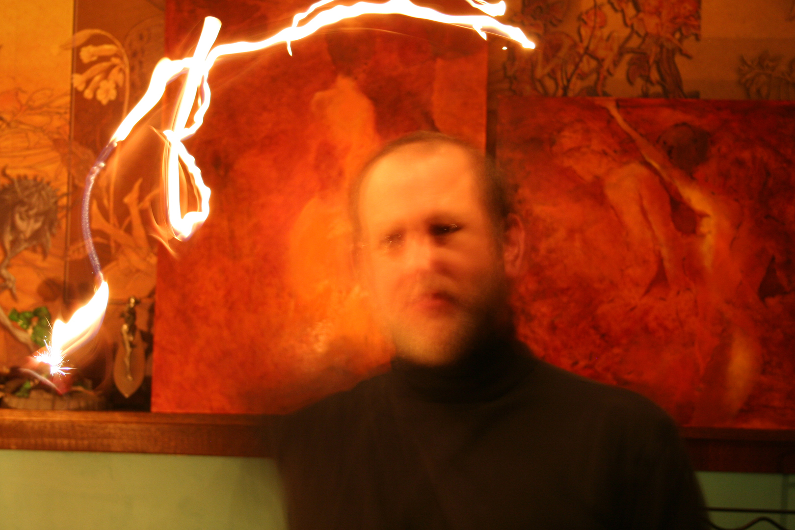

About Mark Sexton
Mark has been interested in art all his life, be it drawing or painting. He has not made a living off of his work, but he still pursues it. When computers came around, he experimented with them and found it very gratifying to be able to make wonderful things very quickly and colourfully - and the ability to delete what he didn't like was a bonus. One of his early problems was that there was no easy way to share his media. He would have to print out the pictures. He loves the idea of mixing digital and traditional art, and Photoshop expanded his ability to do so.
He loves art and its aspects, and he also loves his wife very much.
Mark studied under Robert Bateman and spent some time in Italy studying art.
~ * ~
